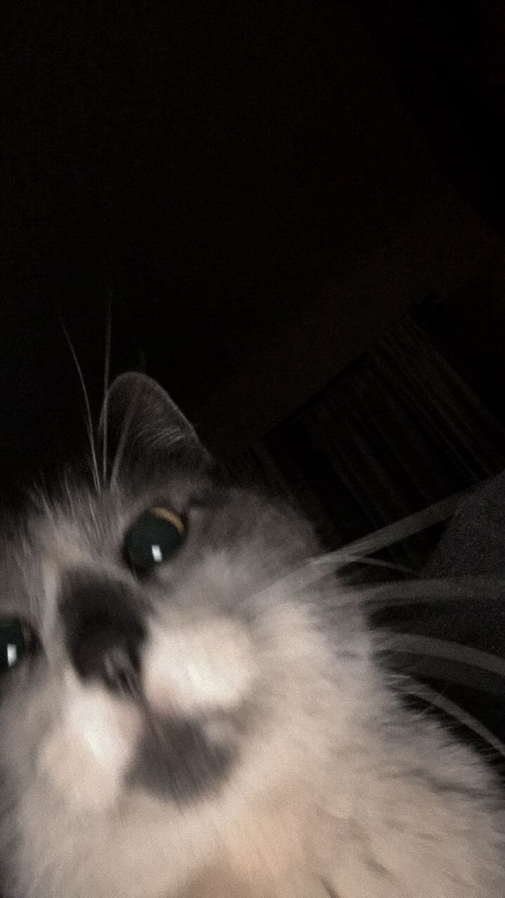

"Saya percaya kemampuan dibangun dari rasa penasaran, konsistensi belajar, dan keberanian mencoba hal baru."

Saya adalah siswa SMKN 1 Semparuk jurusan Rekayasa Perangkat Lunak (RPL). Ketertarikan saya terhadap dunia teknologi dimulai sejak SMP dan terus berkembang hingga sekarang. Saat ini saya fokus mempelajari HTML, CSS, JavaScript, PHP, serta Git untuk meningkatkan kemampuan membuat website dan memahami logika pemrograman.
Membangun struktur dan tampilan website yang responsif.
Memahami DOM dan logika dasar pemrograman web.
Memahami dasar pengembangan website sisi server.
Mengelola proyek dan publikasi website.
Website yang dibuat untuk menampilkan profil, kemampuan, dan perjalanan belajar saya.
Latihan membuat tampilan website modern yang dapat menyesuaikan berbagai ukuran layar.
Proyek latihan logika dasar JavaScript dan manipulasi elemen halaman web.
SMKN 1 Semparuk
Rekayasa Perangkat Lunak (RPL)MTs Al-Hikmah Sidang
SD Negeri 42 Serindang
Saya ingin terus mengembangkan kemampuan di bidang web development dan pemrograman. Dengan belajar secara konsisten, saya berharap dapat menciptakan solusi digital yang bermanfaat bagi banyak orang.
Sambas, Kalimantan Barat
SMKN 1 Semparuk
panyokkkkk
panyokkkkk@gmail.com